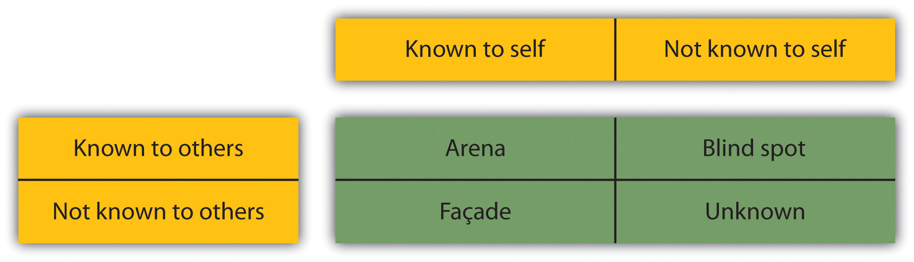

I present myself to you in a form suitable to the relationship I wish to achieve with you.
Luigi Pirandello
If you don’t like something, change it. If you can’t change it, change your attitude.
Maya Angelou
No One Wants to Work with Her
Jenny is going to a BBQ at Monica and Harvey’s house this afternoon. Because it is a big annual event, it is usually a large party. She will likely know about half the people, as Monica and Harvey invite people from all aspects of their lives. As Jenny enters the backyard, she sees familiar faces, as expected, but also sees a lot of people she doesn’t recognize. Immediately she starts fidgeting, as Jenny isn’t good at making small talk. Instead of making eye contact and going over to people who are acquaintances, she drops her potluck dish down, grabs a drink from the cooler, and tries to find Monica so she will have someone to talk with.
At work, Jenny avoids interpersonal relationships and small talk because she is uncomfortable revealing too much of herself. When Jenny attends meetings at work, she sighs impatiently when someone is late and when people veer too far from the topic, and she makes sure to bring people back to reality. When choosing project teams, people rarely want to work with Jenny, even though she is very capable in her job. Some of the women from the office get together for lunch on Tuesdays, but Jenny is never invited. Needless to say, Jenny isn’t well liked at work.
We have all met someone like Jenny, who is seemingly uncomfortable with herself and unpleasant. We may even try to avoid the Jennys we know. Despite Jenny being good at her job, no one wants to work with her. You would think that success at work only takes talent at job-specific tasks. However, this isn’t the case. As we will discuss throughout this chapter and the book, successful people have the skills to do the job, but they also have the human relations skills to get along with others. The focus of this chapter will be personality, attitudes, self-esteem, and perceptions—all of these topics and more impact our ability to get along with others.
The study and understanding of human relations can help us in our workplace, and as a result, assist us in achieving career success. The better our human relations, the more likely we are to grow both professionally and personally. Knowing how to get along with others, resolve workplace conflict, manage relationships, communicate well, and make good decisions are all skills we will discuss throughout the book.
So, what is human relations? We can define human relationsRelations with or between people, particularly in a workplace or professional setting. as relations with or between people, particularly in a workplace or professional setting.Merriam Webster Dictionary, accessed January 30, 2012, http://www.merriam-webster.com/dictionary/human%20relations From a personal perspective, there are many advantages to having good human relations skills. First, of the top ten reasons people are fired, several reasons relate back to lack of human relations skills—for example, the inability to work within a team, personality issues, sexual harassment, and dishonesty.Natalie Jones, “10 Most Common Reasons Why People Are Fired,” Wikinut article, February 28, 2010, accessed January 31, 2012, http://business.wikinut.com/10-Most-Common-Reasons-People-are-Fired/ggcsrftv/ Other reasons, perhaps not directly related to human relations, include absenteeism, poor performance, stealing, political reasons, downsizing, and sabotage. Second, people who are competent team players and have a good work ethic tend to get promoted faster.Jean Maye, “7 Steps to Getting Promoted,” Chicago Tribune, 2012, accessed January 31, 2012, http://www.chicagotribune.com/classified/jobs/sns-jobs-steps-promotion,0,6989913.story In fact, according to guru on personal development Brian Tracy, 85 percent of your success in life is determined by social skills and the ability to interact positively and effectively with others.Brian Tracy, “Mastering Human Relationships,” Brian Tracy International, August 19, 2009, accessed January 31, 2012, http://www.briantracy.com/blog/personal-success/mastering-human-relationships/ Another reason to develop good relationships with others relates to your own personal happiness. According to psychologist Sydney Jourard, most joy in life comes from happy relationships with other people.Tracy, Brian, “Mastering Human Relationships,” Brian Tracy International, August 19, 2009, accessed January 31, 2012, http://www.briantracy.com/blog/personal-success/mastering-human-relationships/
Consider John, a very talented project manager but lacking in human relations skills. While he is easily able to plan and execute the finest details for a project, no one likes to work with him. He doesn’t make efforts to get to know his team members and he comes across as unfriendly and unapproachable. How successful do you think John will be in his workplace? While he has the skills necessary to do the job, he doesn’t have the people skills that can help him excel at it. One could say he does not have emotional intelligence skills—that is, the ability to understand others—therefore, he may always find himself wondering why he isn’t more successful at work (we will discuss emotional intelligence in Chapter 2 "Achieve Personal Success"). While project management skills are something we can learn, managers find it difficult to hire people without the soft skills, or human relations skills. We aren’t saying that skills are not important, but human relations skills are equally as important as technical skills to determine career and personal success. Consider human relations skills in your personal life, as this is equally important. Human relations skills such as communication and handling conflict can help us create better relationships. For example, assume Julie talks behind people’s backs and doesn’t follow through on her promises. She exhibits body language that says “get away from me” and rarely smiles or asks people about themselves. It is likely that Julie will have very few, if any, friends. If Julie had positive human relations skills, there is a much better chance she could improve her personal relationships.
We can benefit personally and professionally from good human relations skills, but how do organizations benefit? Since many companies’ organizational structures depend upon people working together, positive human relations skills reduce conflict in the workplace, thereby making the workplace more productive. Organizational structuresRefers to the way a company arranges people, jobs, and communications so that work can be performed. refer to the way a company arranges people, jobs, and communications so that work can be performed. In today’s business world, teams are used to accomplish company goals because teamwork includes people with a variety of skills. When using those skills in a team, a better product and better ideas are usually produced. In most businesses, to be successful at our job, we need to depend on others. The importance of human relations is apparent in this setting. If people are not able to get along and resolve conflicts, the organization as a whole will be less productive, which could affect profitability. Many organizations empowerWhen an organization gives the employees freedom in making decisions about how their work gets done. their employees; that is, they give employees freedom in making decisions about how their work gets done. This can create a more motivated workforce, which results in more positive human relations. We will explore this topic further in Chapter 6 "Understand Your Motivations".
Most organizations employ a total person approachThis approach recognizes that an organization employs not just someone with skills but rather the whole person.. This approach recognizes that an organization does not just employ someone with skills, but rather, the whole person. This person comes with biases, personal challenges, human relations skills, and technical skills but also comes with experiences. By looking at a person from this perspective, an organization can begin to understand that what happens to an employee outside of work can affect his or her job performance. For example, assume Kathy is doing a great job at work but suddenly starts to arrive late, leave early, and take longer lunches. Upon further examination, we might find that Kathy is having childcare issues because of her divorce. Because of a total person approach perspective, her organization might be able to rearrange her schedule or work with her to find a reasonable solution. This relates to human relations because we are not just people going to work every day; we are people who live our personal lives, and one affects the other. Because of this, our human relations abilities will most certainly be affected if we are experiencing challenges at home or at work.
Joan Harrington, a blogger and life coach, says there are a few key things to getting people to like you.Joan Harrington, “Eight Persuasion Tips to Make Anyone Like You,” Joan Harrington’s True Successes, January 19, 2012, accessed January 31, 2012, http://joansblog.joantruesuccess11.ws/highly-recommended/8-persuasion-tips-to-make-anyone-like-you/
Human relations, however, was not always central to the conversation on organizational success. In fact, until the 1940s, little thought was given to the human aspect of jobs. Many of the jobs in the early 1900s were focused on production and located in factory-like settings where the jobs themselves were repetitive. The focus in these types of work environments was on efficiency. We can call this time period of human relations studies the classical school of managementA time period relating to the research of human relations that focused on efficiency. The time period for this school of thought took place from 1900 to the early 1920s.. This school of thought took place from 1900 to the early 1920s. Several theories were developed, which revolved around the idea of efficiency, or getting a job done with the least amount of steps.
Frederick W. Taylor was an engineer who today is known as the father of scientific management. He began his career in a steel company and, because of his intimate knowledge of the industry, believed that organizations could analyze tasks to make them performed with more efficiency.
Following his work, Frank and Lillian Gilbreth performed numerous studies on physical motions workers took to perform specific tasks and tried to maximize efficiency by suggesting new ways to perform the tasks, using less energy and thereby being more efficient.
While Taylor and Gilbreth’s research was more focused on physical motions and tasks, Henri Fayol began looking at how management could improve productivity instead of focusing on specific tasks and motions. Fayol created the Fourteen Principles of Management, which focused on management but also hinted to the importance of human relations:Girish Sharmaa, “Henri Fayol’s Principles of Management,” Publish Your Articles, no date, accessed February 1, 2012, http://www.publishyourarticles.org/knowledge-hub/business-studies/henry-fayols-principles-of-management.html
Fayol’s research was some of the first that addressed the need for positive human relations in a work environment. As further research was performed into the 1920s, we moved into a new period of human relations studies called the behavioral school of managementDuring the 1920s when employees had begun to unionize, researchers began to look at the human aspect of workers.. During this time period, employees had begun to unionize, bringing human relations issues to the forefront. Because workers demanded a more humane environment, researchers began to look at how organizations could make this happen.
One of the more notable researchers was Elton Mayo, from Harvard Business School, and his colleagues. They conducted a series of experiments from the mid-1920s to early 1930s to investigate how physical working conditions affected worker productivity. They found that regardless of changes such as heat, lighting, hours, and breaks, productivity levels increased during the study. The researchers realized the increased productivity resulted because the workers knew they were being observed. In other words, the workers worked harder because they were receiving attention and felt cared about. This phenomenon is called the Hawthorne effectCoined during the 1920s during a series of experiments where workers had higher productivity because they were being watched by researchers and felt cared about. (named for the electrical plant for which the experiments were conducted).
In the 1950s, researchers began to explore management techniques and the effect on worker satisfaction. This was called the behavioral science approachDuring the 1950s when researchers began to explore management techniques as opposed to earlier years where the focus was more on productivity.. These techniques used psychology, sociology, and other human relations aspects to help researchers understand the organizational environment.
Since the 1960s, research on human relations has been much easier to assimilate because of technology and a focus on statistical analysis. Hence, this is called the management science schoolDuring the 1960s when the research on human relations was more focused on statistical aspects, due to the increase in technology.. So while research today focuses on the human relations aspect, we are now able to use complex statistical models to improve efficiency and productivity while still focusing on the human relations component.
While we discuss the impact of technology on human relations throughout the book, it is important to mention here the immense impact technology has had on this field of study. Inability to see body language indicators make it more difficult to communicate using technology, creating conflict and misunderstandings. These misunderstandings can obviously affect human relations. Also consider that through globalization, we are working with people from all over the world in many time zones who have different perspectives. Between technology and globalization, humans have never had to work with such a diverse group of people—using diverse methods of communication—at any time in history.
Technology has allowed us to do this: e-mail, Skype, and instant message, to name a few. The impact on human relations is obvious—there is less face-to-face interactions and more interactions using technology. Add in the challenge of a global environment and this creates a whole new set of challenges.
Many organizations today are focusing on how to use technology to save workers time commuting to work. In fact, an estimated 26.2 million workers telecommuteThe practice of working from a remote location., or work from a remote location at least once per month.Telework 2011, “A WorldatWork Special Report,” World at Work Organization, June 2011, accessed February 1, 2012, http://www.worldatwork.org/waw/adimLink?id=53034 Global Workplace Analytics cites the following benefits to telecommuting:
However, Global Workplace Analytics also says there are some key drawbacks:Telework Research Network, “Costs and Benefits: Advantages of Telecommuting,” Telework Research Network, no date, accessed February 1, 2012, http://www.teleworkresearchnetwork.com/costs-benefits
While technology has greatly impacted human relations at work, there are some common denominators for human relations success in today’s workplace—whether or not technology is used. These factors will be discussed throughout this book:
We will focus on human relations in a work setting, but many examples will also relate to personal settings. The examples provided will give you tools to have positive relationships with coworkers, supervisors, and people in your personal life. These positive relationships—both at home and at work—help us become more rounded, happier individuals. This is good for everyone, including the company you work for.
Our personalityA set of traits that can explain or predict a person’s behavior in variety of situations. is defined as a set of traits that can explain or predict a person’s behavior in a variety of situations. In other words, personality is a set of characteristics that reflect the way we think and act in a given situation. Because of this, our personality has a lot to do with how we relate to one another at work. How we think, what we feel, and our normal behavior characterize what our colleagues come to expect of us both in behavior and the expectation of their interactions with us. For example, let’s suppose at work you are known for being on time but suddenly start showing up late daily. This directly conflicts with your personality—that is, the fact that you are conscientious. As a result, coworkers might start to believe something is wrong. On the other hand, if you did not have this characteristic, it might not be as surprising or noteworthy. Likewise, if your normally even-tempered supervisor yells at you for something minor, you may believe there is something more to his or her anger since this isn’t a normal personality trait and also may have a more difficult time handling the situation since you didn’t expect it. When we come to expect someone to act a certain way, we learn to interact with them based on their personality. This goes both ways, and people learn to interact with us based on our personality. When we behave different than our normal personality traits, people may take time to adjust to the situation.
Personality also affects our ability to interact with others, which can impact our career success. In a 2009 studyAngelina R. Sutin and Paul T. Costa, “Personality and Career Success,” European Journal of Personality 23, no. 2 (March 2009): 71–84. by Angelina Sutin et al., it was found that the personality characteristic of neuroticism (a tendency to experience negative emotional states) had more effect than any personality characteristic on determining future career success. In other words, those with positive and hopeful personalities tend to be rewarded through career success later in life.
Although there is debate between whether or not our personalities are inherent when we are born (nature) versus the way we grew up (nurture), most researchers agree that personality is usually a result of both nature and our environmental/education experiences. For example, you have probably heard someone say, “She acts just like her mother.” She likely behaves that way because she was born with some of her mother’s traits, as well as because she learned some of the behaviors her mother passed to her while growing up.
Figure 1.1

Nature and nurture factors determine our personality.
Another example might be someone who grows up with their parents constantly having parties. As a result, as an adult this person may end up organizing a lot of parties, too. Or the influence of parties may create the opposite effect, where the person doesn’t want to have parties at all. The environmental and educational experiences can create positive or negative associations, which result in how we feel about any situation that occurs in our lives.Alexandria Lupu, “Our Personality: Is It Genetically Inherited or Determined by the Environmental Factors,” Softpedia News, July 2, 2006, accessed February 3, 2012, http://news.softpedia.com/news/Our-Personality-Is-It-Genetically-Inherited-or-Determined-by-The-Environmental- Factors-28413.shtml
Our values help determine our personality. Our valuesThe things we find most important to us. are those things we find most important to us. For example, if your value is calmness and peace, your personality would show this in many possible ways. You might prefer to have a few close friends and avoid going to a nightclub on Saturday nights. You might choose a less stressful career path, and you might find it challenging to work in a place where frequent conflict occurs.
We often find ourselves in situations where our values do not coincide with someone we are working with. For example, if Alison’s main value is connection, this may come out in a warm communication style with coworkers and an interest in their personal lives. Imagine Alison works with Tyler, whose core value is efficiency. Because of Tyler’s focus, he may find it a waste of time to make small talk with colleagues. When Alison approaches Tyler and asks about his weekend, she may feel offended or upset when he brushes her off to ask about the project they are working on together. She feels like a connection wasn’t made, and he feels like she isn’t efficient. Understanding our own values as well as the values of others can greatly help us become better communicators.
What are your top five values? How do you think this affects your personality?
| Accomplishment, success | Ease of use | Meaning | Results-oriented |
| Accountability | Efficiency | Justice | Rule of law |
| Accuracy | Enjoyment | Kindness | Safety |
| Adventure | Equality | Knowledge | Satisfying others |
| All for one & one for all | Excellence | Leadership | Security |
| Beauty | Fairness | Love, romance | Self-givingness |
| Calm, quietude, peace | Faith | Loyalty | Self-reliance |
| Challenge | Faithfulness | Maximum utilization | Self-thinking |
| Change | Family | Intensity (of time, resources) | Sensitivity |
| Charity | Family feeling | Merit | Service (to others, society) |
| Cleanliness, orderliness | Flair | Money | Simplicity |
| Collaboration | Freedom, liberty | Oneness | Skill |
| Commitment | Friendship | Openness | Solving problems |
| Communication | Fun | Other’s point of view, inputs | Speed |
| Community | Generosity | Patriotism | Spirit, spirituality in life |
| Competence | Gentleness | Peace, nonviolence | Stability |
| Competition | Global view | Perfection | Standardization |
| Concern for others | Goodwill | Personal growth | Status |
| Connection | Goodness | Perseverance | Strength |
| Content over form | Gratitude | Pleasure | A will to perform |
| Continuous improvement | Hard work | Power | Success, achievement |
| Cooperation | Happiness | Practicality | Systemization |
| Coordination | Harmony | Preservation | Teamwork |
| Creativity | Health | Privacy | Timeliness |
| Customer satisfaction | Honor | Progress | Tolerance |
| Decisiveness | Human-centered | Prosperity, wealth | Tradition |
| Determination | Improvement | Punctuality | Tranquility |
| Delight of being, joy | Independence | Quality of work | Trust |
| Democracy | Individuality | Regularity | Truth |
| Discipline | Inner peace, calm, quietude | Reliability | Unity |
| Discovery | Innovation | Resourcefulness | Variety |
| Diversity | Integrity | Respect for others | Well-being |
| Dynamism | Intelligence | Responsiveness | Wisdom |
Our attitudesFavorable or unfavorable feelings toward people, things, or situations. are favorable or unfavorable opinions toward people, things, or situations. Many things affect our attitudes, including the environment we were brought up in and our individual experiences. Our personalities and values play a large role in our attitudes as well. For example, many people may have attitudes toward politics that are similar to their parents, but their attitudes may change as they gain more experiences. If someone has a bad experience around the ocean, they may develop a negative attitude around beach activities. However, assume that person has a memorable experience seeing sea lions at the beach, for example, then he or she may change their opinion about the ocean. Likewise, someone may have loved the ocean, but if they have a scary experience, such as nearly drowning, they may change their attitude.
The important thing to remember about attitudes is that they can change over time, but usually some sort of positive experience needs to occur for our attitudes to change dramatically for the better. We also have control of our attitude in our thoughts. If we constantly stream negative thoughts, it is likely we may become a negative person.
In a workplace environment, you can see where attitude is important. Someone’s personality may be cheerful and upbeat. These are the prized employees because they help bring positive perspective to the workplace. Likewise, someone with a negative attitude is usually someone that most people prefer not to work with. The problem with a negative attitude is that it has a devastating effect on everyone else. Have you ever felt really happy after a great day and when you got home, your roommate was in a terrible mood because of her bad day? In this situation, you can almost feel yourself deflating! This is why having a positive attitude is a key component to having good human relations at work and in our personal lives.
But how do we change a negative attitude? Because a negative attitude can come from many sources, there are also many sources that can help us improve our attitude.
On the Motivation123 website, they describe the three things to consider when trying to change your attitude.
Reams are written about improving your attitude; not so when it comes to defining that thing you’re trying to improve. In this checklist, we’re going to fix that.
Though there are many ways to define attitude, I find the three checkpoints below to be the most helpful. They make it clear not only what your attitude is made of but also how it affects what you do.
1. How You Enter
Before heading down South for a vacation, I expected a relaxing and enjoyable time. This is the first piece of your attitude: it is what you expect before something happens.
For me, I expected good things. Someone with a more negative bent—at least in relation to traveling—would predict rough times ahead.
2. How You Live through It
The second piece of your attitude is the way in which you gauge progress. Do you notice what is going wrong? Going well? Somewhere in between?
I went to dinner the other night with a few friends. I’m always on the lookout for stories to use on the site, so when they started to comment on the place, I was drawn in. One friend noticed how noisy the restaurant was, how grumpy the waiter seemed, and how bad the food tasted.
On the heels of this cheery testimonial, the friend sitting next to me said she loved the atmosphere, the style of the tables, and her dinner. Two attitudes looking for very different things.
3. How You Exit
The last role your attitude plays happens at the end of a situation or experience. At this point, your attitude affects the way you sum things up.
I was watching a competition-based reality show the other night and, when two people were sent home, they were given the chance to talk to the camera one last time.
They were asked what they would take away from the experience. The first reflected on the friendships he had made and the good times he had had. The second was angry and vengeful. To her, the experience was a waste of time. Attitude strikes again.
Reprinted with permission: Motivation123.com. Get hundreds of simple motivation tips, along with your free Motivation123 Welcome Kit, at the Motivation123.com website. Visit http://www.motivation123.com today.
As Note 1.19 "Changing Your Attitude" points out, our attitude is ultimately about how we set our expectations; how we handle the situation when our expectations are not met; and finally, how we sum up an experience, person, or situation. When we focus on improving our attitude on a daily basis, we get used to thinking positively and our entire personality can change. It goes without saying that employers prefer to hire and promote someone with a positive attitude as opposed to a negative one. Other tips for improving attitude include the following:Richard Whitaker, “Improving Your Attitude,” Biznick, September 2, 2008, accessed February 3, 2012, http://biznik.com/articles/improving-your-attitude
People would describe me as unhappy.
I complain right away if there is something I don’t like.
Being positive most of the time is far too unrealistic.
If I have a bad morning, the rest of my day is sure to be ruined.
I tend to think more about my weak points than my strong points.
I don’t give out compliments because I don’t want someone to get a big ego.
In the past two weeks, I have called myself depressed.
I worry too much about things I can’t control.
It takes a lot to make me happy.
When I experience a failure, I usually just stop trying.
Now, count the number of true and false answers. The more false answers you have, the better attitude you tend to have. If you have many true answers, what are some ways to help you change to a more positive attitude?
When considering our personality, values, and attitudes, we can begin to get the bigger picture of who we are and how our experiences affect how we behave at work and in our personal lives. It is a good idea to reflect often on what aspects of our personality are working well and which we might like to change. With self-awareness (discussed further in Chapter 2 "Achieve Personal Success"), we can make changes that eventually result in better human relations.
Our personality traits, attitude, and self-esteem have everything to do with human relations. When you are planting a vegetable garden, you wouldn’t fill the new garden with old soil that no longer has nutrients in it. Doing this will result in your plants not growing as large as they can or could even result in them not growing at all. If we look at our human relations ability, the same idea applies. Personality, attitude, and self-esteem comprise the nutrient-rich soil required for our human relations skills to grow. Our personality is how we see the world, either positive and full of hope or negative and full of despair. Without a positive attitude, it can be difficult to relate to others—because they may not want to be around us! Likewise, having a positive self-image can give us the confidence to nurture relationships, resulting in positive human relations as well. Just like the garden that needs soils rich in nutrients, our human relations skills are the same. To make our human relations skills grow, we need to look at our underlying personality characteristics, attitudes, and self-esteem that could be helping—or hindering—our ability to relate to others.
As we have discussed so far in this chapter, many things impact our human relations with others. Perception is no different. PerceptionThe recognition and interpretation of sensory stimuli based upon our memory. is the recognition and interpretation of sensory stimuli based upon our memory. In other words, it is the way you interpret data around you. The data could come from sight, smell, touch, taste, and hearing. For example, if you wake up in the morning to the smell of coffee, your perception is likely correct that your roommate is already awake. The challenge with perception in human relations is that we may not always understand someone else’s perception and/or assume their perception is our own. This is where disagreements and other communication issues can occur. For example, if you perceive that your significant other is too focused on spending time with friends, your interactions with her will be based upon this perception. For example, you could be frustrated and short tempered. In a workplace setting, perceptions can also cause miscommunications. For example, you may perceive your coworker to be lazy because he always arrives to work at 8:15 a.m. and the start time is 8 a.m. Suppose he has a child with a medical condition who needs special schooling, and the school doesn’t open until 8 a.m.? Perhaps he has made arrangements with your supervisor of which you are unaware. This perception can be a dangerous one, since we don’t have all of the facts.
How many legs does this elephant have? This section on perception is going to address the many ways we perceive things—and how these perceptions impact our ability to relate to others.
Researcher and professor Dan Simons provides a short video that looks at our own perceptions.
We have defined perception and given some example to show how perceptions can be incorrect—negatively impacting relationships. But where do our perceptions come from? There are a number of things that influence our perception.Rita Baltus, Personal Psychology for Life and Work (New York: McGraw-Hill, 2000), 27–29. First, our heredity can be major influencers of our perception. Height, skin color, and gender influence the way we see the world. For example, someone who is 5’ 2” may perceive an object to be stored too high, while someone who is 6’ 2” may not have that same perception.
Our needs impact our perception as well. Physiological needs, such as food and water (or lack thereof), can influence how we feel about certain situations. Have you ever been in a social situation where you were very hungry? If so, you know this impacted your ability to socialize with other people. You may have found yourself less patient to listen because you were concerned about when you were going to eat! Or if you have ever taken a road trip and needed to use the restroom, your perception may be that the highway lacks a sufficient number of rest areas.
Our peer group can also impact our perception. Our peers tend to determine what is desirable or undesirable, thereby giving us information on how to interpret data around us. You have experienced this personally, no doubt. If you perceive a brand of clothing desirable, it is more likely your friends also feel similar. The same thing happens at work; for example, suppose a supervisor uses Skype to conduct meetings because her perception is that it is an efficient way to do business. It is highly likely that others in your workgroup will perceive it as a useful tool, also.
Our interests impact our perception. If you like running marathons, your perception on how much to spend on running shoes will be different from someone who prefers kayaking for fun and needs a pair of athletic shoes. Assume your interest at work is to be promoted. Your perception of work is very different than someone who can’t stand the job and is looking for a position with a different company.
Our expectations are another driver of our perceptions. For example, research performed by Ronald MelzackRonald Melzack et al., “Central Neuropasticy and Pathological Pain,” Annals New York Academy of Sciences 933 (2001): 157–59. suggests our expectations about how much something will hurt alters our perception after the fact. For example, if you are dreading getting a flu shot because you believe it will hurt a lot (expectations), once you actually have it done, you may say, “That didn’t hurt at all” (perception), because your expectation prepared you beforehand. In other words, our expectations affect our perception after the fact. In this example, our expectation was extreme pain, but when that didn’t occur, our perception was quite the opposite. Our expectations and resulting perception can also be looked at in a work setting. For example, if you have high expectations that your workgroup will win the annual chili cook-off at your company picnic, but you don’t win, your perception could be one of unfairness: “The judges like the marketing department better.” Likewise, if your team wins the chili cook-off and you expected to win, your perceptions may be, “Of course we won, we knew ours was the best.”
A halo effectAssumes that if a person has one trait we like, that all traits must be desirable. or reverse halo effectIf we find an undesirable trait in someone, we assume all traits are undesirable. can also alter our perceptions. The halo affect assumes that if a person has one trait we like, that all traits must be desirable. The reverse halo effect is if we find an undesirable trait in someone, we assume all traits are undesirable. Assume you don’t like the way your coworker, Mariette, speaks. You may then make an assumption that all of Mariette’s traits are negative. Likewise, if you believe Rhonda is a great dental hygienist, you may promote her to manage the other dental hygienists. Later, if the other hygienists complain about her management style, you may realize you promoted her because you thought her skill as a dental hygienist meant she also had good management skills. In this case, the halo effect occurred.
Awareness of our own perceptions and what drives those perceptions is a key component to being successful at work. If we know why we believe something to be good, right, fair, negative, or unfair based on our perceptions, we can begin to let go of some of our misperceptions. As a result, developing good relationships at work, respect, and mutual understanding can create a better workplace.
The classic optical illusion that shows our perceptions can be very different from other’s perceptions. Do you see an old woman or a young woman in this picture?
Self-esteemThe opinion you have for yourself and your value as a person. is the opinion you have of yourself and your perception on your value as a person. Low (negative) self-esteem can cause people to be negative, lack motivation, and be moody. Those with higher (positive) self-esteem like themselves, so they expect others to like them, too. They don’t harshly judge themselves and are comfortable with who they are.
Self-confidenceYour belief in yourself and your abilities., on the other hand, is your belief in yourself and your abilities. Often, people with high self-esteem also have self-confidence, although this may not always be the case. Both self-esteem and self-confidence can translate to positive human relations because if a person feels good about himself or herself, it is more likely he or she will be more comfortable communicating and working in teams—key components for success. According to researchers George Hollenbeck and Douglas Hall,George Hollenbeck and Douglas Hall, “Self-Confidence and Leader Performance” (technical report, Boston University Executive Development Roundtable, 2004). self-confidence can come from several sources:
Self-efficacyThe confidence you have to carry out a specific task. is the confidence you have to carry out a specific task. Someone may have generally lower self-confidence but have self-efficacy in certain areas of his or her life. For example, Michael may have low self-esteem in general, but he is a computer whiz so he has self-efficacy in his ability to rebuild a computer.
Self-imageHow an individual thinks others view him or her. is a bit different than self-esteem in that it means how an individual thinks others view him or her. One’s self-image may not always be in line with what people actually think, but you can imagine the impact this can have on human relations at work. If someone’s self-image is that people think they are stupid, they may not try as hard since they believe this is what people think of them anyway. Obviously, this can be an unproductive and unhealthy way of working with others.
ProjectionRefers to how your self-esteem is reflected in the way you treat others. refers to how your self-esteem is reflected in the way you treat others. For example, if Cheng has low self-esteem, he may project this by putting down other people or belittling them. Likewise, if Cheng has high self-esteem, his projection onto others may be positive.
Even if our self-confidence needs improvement, the good news is that there are many ways we can improve it. The following are examples:
Everyone can continue working on their self-esteem and self-confidence throughout life. The Johari windowA tool that can help us determine how we see ourselves and how others see us. is one tool that can help us determine how we see ourselves and how others see us. This can serve as a good starting point and self-assessment tool to help us become better at human relations.
The Johari window was created in 1955 by Josephy Luft and Harry Ingham. When it was created, the researchers gave people fifty-six adjectives they could use to describe themselves. The subjects picked five or six adjectives and then had someone who knew them well pick six for that person as well. Then, the adjectives were placed in the appropriate place in the grid. The grid consists of four windows. The first window is the open areaIn the Johari window, the area that the person knows about themselves and others know about them.. In this area, these are things that someone knows about themselves and others see in them too. The second window is the blind areaIn the Johari window, the area the person doesn’t know about themselves but others know about them.. In the blind area, the person does not know it about themselves, but others see it in them. In the hidden areaIn the Johari window, the area the person knows about themselves, but others do not know about them., the person knows this about her- or himself, but others are not aware of it. In the unknown areaIn the Johari window, the area that neither the person nor others know., neither person knows what exists there. Through time and as we change and grow, we may have more self-awareness and aspects of ourselves once in the unknown area may go into one of the other windows.
Figure 1.2 The Johari Window
Having higher self-esteem and higher self-confidence can improve our projection, meaning we can better accept criticism, learn from our mistakes, and communicate more effectively. This can result in better human relations at work and, ultimately, higher productivity and higher profitability.
Using the following adjectives, please select five to six that best describe you. Once you have done this, have someone who knows you well select five to six adjectives. Compare those you selected to those your friend selected, and then place in the appropriate window of Johari’s model, the open area, blind area, unknown area, or hidden area. Then answer the following questions:
| simple | brash | vulgar | unimaginative | violent |
| withdrawn | childish | unhappy | irrational | insecure |
| cynical | impatient | inane | imperceptive | hostile |
| boastful | panicky | distant | loud | needy |
| weak | smug | chaotic | self-satisfied | ignorant |
| unethical | predictable | vacuous | overdramatic | blasé |
| rash | foolish | passive | unreliable | embarrassed |
| callous | patient | dull | dependable | insensitive |
| humorless | powerful | intelligent | dignified | dispassionate |
| sensible | proud | introverted | energetic | inattentive |
| sentimental | quiet | kind | extroverted | able |
| shy | reflective | knowledgeable | friendly | accepting |
| silly | relaxed | logical | giving | adaptable |
| spontaneous | religious | loving | happy | bold |
| sympathetic | responsive | mature | helpful | brave |
| tense | searching | modest | idealistic | calm |
| trustworthy | self-assertive | nervous | independent | caring |
| warm | self-conscious | observant | ingenious | cheerful |
| wise | cowardly | organized | inflexible | clever |
| witty | irresponsible | timid | glum | complex |
| intolerant | selfish | unhelpful | aloof | confident |

The Johari Window